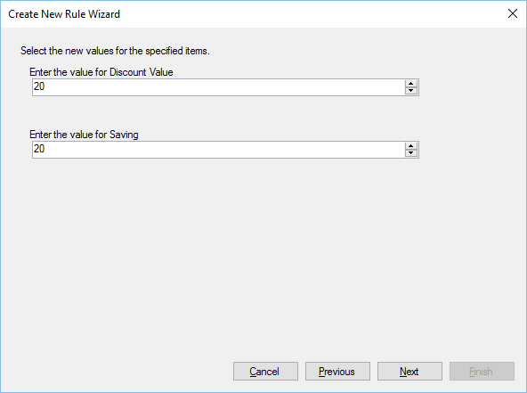

Step 3
Previous
Top
Next
During step 3 you can set what the new values will be, the available options depend on the rule selected.

In this example the discount value is set to 20% and the Saving value is set to 20%, if set to zero then the discount would be removed.